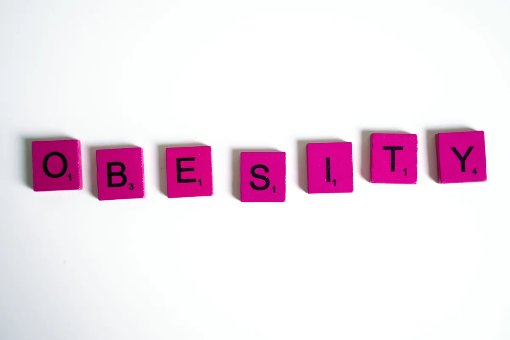

Obesity's Lingering Impact: How Fat Changes Your Immune System's Memory

Key takeaways
- I remember the frustration so clearly.
- I'd shed those extra 20 pounds, felt lighter, and thought, "Okay, I'm back to normal." But then I'd catch a cold that felt like it lingered for weeks, or notice my allergies acting up way more than usual.
- Track what feels sustainable and adjust gradually.
I remember the frustration so clearly. I'd shed those extra 20 pounds, felt lighter, and thought, "Okay, I'm back to normal." But then I'd catch a cold that felt like it lingered for weeks, or notice my allergies acting up way more than usual. It felt like my body was playing catch-up, or worse, just not quite getting the memo that the weight was gone. It turns out, there's a real reason for that feeling, and it's tied to something called immune memory. Obesity's lingering impact isn't just about the number on the scale; it can actually rewire how your immune system remembers past threats and responds to new ones.
For years, we've understood that excess body fat, especially around the belly, isn't just inert storage. It's a metabolically active tissue that churns out hormones and inflammatory signals. But the science is getting deeper, revealing that this chronic inflammation caused by obesity can leave a lasting imprint on your immune cells, particularly your T cells. These are the soldiers of your immune system, responsible for remembering and fighting off specific pathogens.
Think of your immune system like a well-trained army. When it encounters an enemy (like a virus), it learns its face, develops a strategy to defeat it, and keeps a record of that enemy. This is immune memory. It allows your body to mount a faster, stronger defense if that same enemy shows up again. This is the principle behind vaccines – they teach your immune system to remember a threat without you having to get sick.
But here's the kicker: chronic inflammation from obesity can disrupt this memory process. Studies are showing that in individuals who have experienced obesity, their T cells might become 'exhausted' or altered. This means they might not remember past infections as effectively, or they might be more prone to overreacting to harmless substances, leading to chronic inflammation and potentially autoimmune issues. It's like the army's filing system gets jumbled, or the soldiers get permanently stressed out.
This altered immune memory is one of the significant aspects of Obesity's Lingering Impact. It means that even after successful weight loss, the cellular changes might persist. Your immune system might still be operating under the 'memory' of a body that was chronically inflamed. This can make you more susceptible to infections or less responsive to vaccines. It's a complex biological dance, and we're still learning all the steps.
I've seen this play out in my own life. After a period of significant weight gain, I noticed I wasn't bouncing back from colds like I used to. It was disheartening. It felt like a punishment for past choices, but understanding the science of immune memory helps reframe that. It's not about blame; it's about understanding the biological consequences and then taking informed steps to support my body's recovery.
So, what can we do about it? The good news is that adopting a healthier lifestyle, even after periods of obesity, can help retrain your immune system. Focusing on a balanced diet rich in anti-inflammatory foods, getting regular exercise, prioritizing sleep, and managing stress are all crucial. These aren't just general wellness tips; they are direct interventions that can help reduce chronic inflammation and support the restoration of healthy immune function. You can find a related healthy tip here.
I've found that incorporating more plant-based meals has made a noticeable difference in how I feel overall. It's not about deprivation; it's about abundance of nutrients that calm inflammation. And don't underestimate the power of movement. Even a brisk walk can signal to your body that things are changing for the better. For those looking for guidance, check out this another practical guide on incorporating movement.
It's also vital to understand that this isn't an overnight fix. Patience and consistency are key. My journey has taught me that celebrating small wins and focusing on progress, not perfection, is the way forward. This is a similar wellness insight that has helped me stay on track.
Pro-Tip: Don't get discouraged if you don't see immediate, dramatic shifts in your immune response after weight loss. Think of it as a long-term investment in your health. Consistent healthy habits are what truly build resilience. For more on this, you can stay consistent with this approach.
Research into how obesity affects immune memory is ongoing, but the current understanding highlights the importance of addressing excess weight not just for metabolic health, but for the long-term resilience of our immune defenses. It's a powerful reminder that our bodies are incredibly interconnected, and what happens in one system can have ripple effects throughout.
Educational only — not medical advice. You can explore more anti-inflammatory guides to learn more about supporting your body.
The 2-Minute Win
Take a deep breath right now. Inhale slowly through your nose, hold for a moment, and exhale slowly through your mouth. Repeat this 3-5 times. This simple act of controlled breathing can help reduce immediate stress signals, which positively impacts inflammation and, over time, supports your immune system's recovery.
Recommended Reading
- Unlock a Healthier Weight: 2 Easy Eating Habits Revealed by Science
- Baby Fat, Big Problems: How Early Weight Gain Impacts Your Future Health
- Unlock Your Youth & Stress Resilience: Coffee's Secret Cellular Power
More in health
 health
healthSpirulina: The Sustainable Superfood Tackling Vitamin B12 Deficiency
Discover how Spirulina, the sustainable superfood, is tackling Vitamin B12 deficiency for plant-based eaters. Learn abou
Read article → health
healthVitamin C & Colds: What the Science Really Says
Curious if Vitamin C actually helps with colds? We break down what the science really says about Vitamin C & colds, and
Read article →Related posts
healthSpirulina: The Sustainable Superfood Tackling Vitamin B12 Deficiency
Discover how Spirulina, the sustainable superfood, is tackling Vitamin B12 deficiency for plant-based eaters. Learn abou
Read article →healthVitamin C & Colds: What the Science Really Says
Curious if Vitamin C actually helps with colds? We break down what the science really says about Vitamin C & colds, and
Read article → health
healthMindful Eating Techniques for Optimal Gut Health and Digestion
Discover effective Mindful Eating Techniques for Optimal Gut Health and Digestion. Learn to slow down, savor food, and l
Read article →